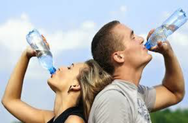

Estudos associados a Organização Mundial da Saúde aponta que cerca 80% das doenças registradas em países em desenvolvimento, são causadas pela péssima qualidade da água. Muitas doenças surgem quando a água não passa pelo devido tratamento de limpeza e purificação que eliminem vírus, bactérias e parasitas que contaminam a água e acaba causando malefícios ao ser humano.
Quais são essas doenças
A transmissão dessas doenças pode ser diretamente na água ou através de vetores que se proliferam na água, sendo assim, podemos concluir de forma geral que todas elas têm ligações com a água. E como ocorrem essas transmissões?
• Ingestão da água contaminada
Nesse tipo de transmissão, ao ingerirmos água contaminada, estamos ingerindo vários microrganismos causadores de doenças. Muitas dessas doenças acabam trazendo sintomas como a diarreia.
Algumas dessas doenças são: giardíase, hepatite A, rotavírus, amebíase e entre outros.
• Entrando em contato com água contaminada
Ao entrarmos em contato com água mal tratada, estamos sujeitos a várias doenças, mesmo não bebendo dessa água.
Algumas dessas doenças são: Leptospirose, esquistossomose, infecções causadas por amebas de vida livre e entre outras.
• Vetores que se proliferam na água
Alguns organismos fazem criadouros na água e futuramente causando muitas doenças. Aedes aegypti e o mais conhecido, por ser o transmissor de várias doenças como dengue, febre amarela, febre zica e Chikungunya.
Sinais de que a água não é filtrada
As autoridades de saúde sempre alertam que o mais recomendado e o consumo de água filtrada ou água mineral que é submetida a teste de qualidade. Não devemos consumir em hipótese alguma se a água apresentar os seguintes sinais:
Deve-se tomar cuidado ao tomar água da torneira ou durante o banho, por mais que essa água passa por uma série de tratamentos na estação de tratamento da água, ela está sujeita a contaminação durante o percurso até sua casa, sendo essas algumas das maneiras mais fáceis de evitar doenças.
Como fazer a purificação da água
A forma mais pratica e barata de purificar a água é tendo um filtro de água. Sua vela
retém impurezas, sabores e odores presentes na água. Outro método mais arrojado é adquirindo um purificador de água. Diferente do filtro de água, o purificador pode remover substâncias presentes, como cloro e bactérias, além de remover sólidos como areia.
Quem não possui acesso a esses recursos, pode ferver a água por aproximadamente 5
minutos, assim matando qualquer substância presente dentro da água.
Existe uma substância química que pode ser adquirido em farmácias, mercados e muitos outros lugares, e deve tomar cuidado quando for comprar, pois o mesmo pode ser vendido de várias formas. Essa substância se chama hipoclorito de sódio, ela pode ser utilizada para purificara a água, pingando de 2 a 4 gotas por litro de água e armazenando em um recipiente não transparente por 30 minutos, logo após já pode ser consumida.



Reaproveite - Copyright © 2020.